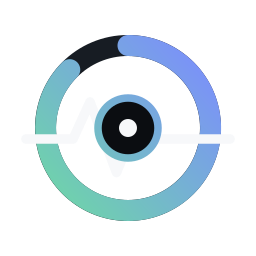

CPU
--%

OVERVIEW
Live hardware and game telemetry.
ACTIVE SESSION
Monitoring starts automatically when a supported game is detected.
QUICK ACTION
Prepare Windows and prioritize your active game session.
LIVE TELEMETRY
Low: последние 12000 кадров, не вся сессия. Расчёт не чаще раза в секунду.
STEAM INTEGRATION
Профиль Steam и локальная производительность — без каталога игр.
Получение состояния аккаунта…
CONNECTED PROFILE
Войдите в Account, затем привяжите Steam.
НЕ ПРИВЯЗАНПароль Steam вводится только на официальном сайте Steam в браузере. Привязка подтверждает SteamID, но не показывает сетевой статус пользователя.
LOCAL MONITORING
Метрики локальны и не берутся из Steam. Запустите поддерживаемую игру.
THIS COMPUTER
Локальная история этого компьютера, не статистика Steam-аккаунта. Средний FPS — по периодическим замерам.
LOCAL HISTORY
История сохраняется на этом компьютере между запусками.
PERFORMANCE
Choose how VoidCore prepares Windows for gaming.
Получение настроек…
Прирост FPS зависит от причины ограничения. Антивирус и службы не отключаются; изменяются только выбранные приоритеты, план питания и два пользовательских параметра Game DVR.
ANALYSIS
Understand performance drops and bottlenecks.
VoidCore will show the probable cause and recommendations here.
Вход и регистрация VoidCore. Управление Steam находится в Steam Hub.
Подключение к сервису аккаунтов…
Email подтверждён
CONFIGURATION
Application behavior and startup preferences.
GITHUB RELEASES
Получение состояния обновлений…
Скачивание и установка — только по вашему запросу, вне игры.